NetScaler Scripting
Navigation
- Change Log
- Script to Extract Configuration
- Configure NetScaler from PowerShell
- Nitro REST API Documentation
:idea: = Recently Updated
Changelog
- 2019 Mar 11 - Script to Extract Configuration - rewrote the section in instructional format
- 2018 Dec 2 - Configuration Extractor - added a nFactor visualizer
- 2018 Nov 17 - Configuration Extractor - Out-GridView (GUI) for vServer selection
- 2018 Sep 19 - Configuration Extractor - several fixes
- 2018 July 4 - Configuration Extractor
- Added “*” to select all vServers
- Updated for 12.1 (SSL Log Profile, IP Set, Analytics Profile)
- Extract local LB VIPs from Session Action URLs (e.g. StoreFront URL to local LB VIP)
- Extract DNS vServers from “set vpn parameter” and Session Actions
- 2018 Jan 4 - Configuration Extractor, Sirius' Mark Scott added code to browse to open and save files. Added kcdaccounts to extraction.
- 2018 Jan 3 - new Powershell-based NetScaler Configuration Extractor script
NetScaler ADC Configuration Extractor
NetScaler ADC Configuration Extractor extracts every NetScaler ADC CLI command needed to rebuild one or more Virtual Servers. Here's how to use the script:
- The extraction script loads a NetScaler ADC Configuration file and parses it. To get a NetScaler ADC Configuration file:
- On your NetScaler ADC, go to System > Diagnostics > Running Configuration and then click the link on bottom to save text to a file.
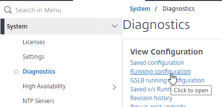
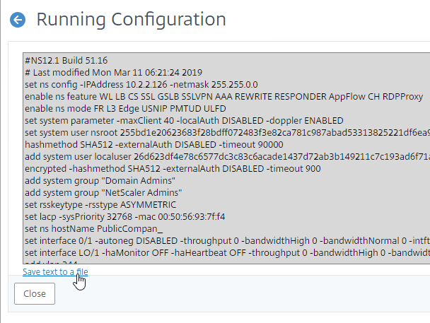
- On your NetScaler ADC, go to System > Diagnostics > Running Configuration and then click the link on bottom to save text to a file.
- To download the extraction script, point your browser to https://github.com/cstalhood/Get-ADCVServerConfig/blob/master/Get-ADCVServerConfig.ps1, right-click the Raw button, and Save link as.
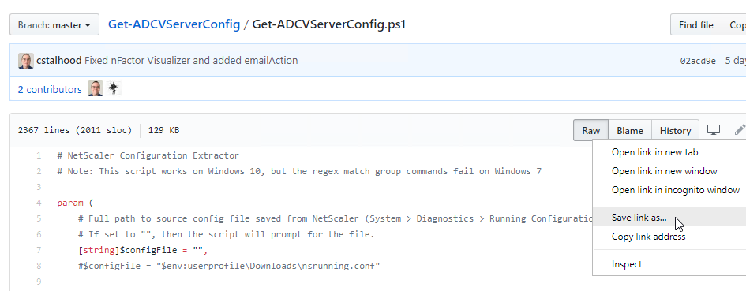
- Run the extraction script in PowerShell. One option is to right-click the script file and click Run with PowerShell. (note: the script doesn't seem to work on Windows 7)
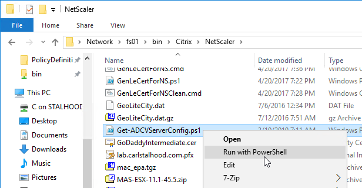
- Browse for the Running Configuration file that you saved from an appliance.
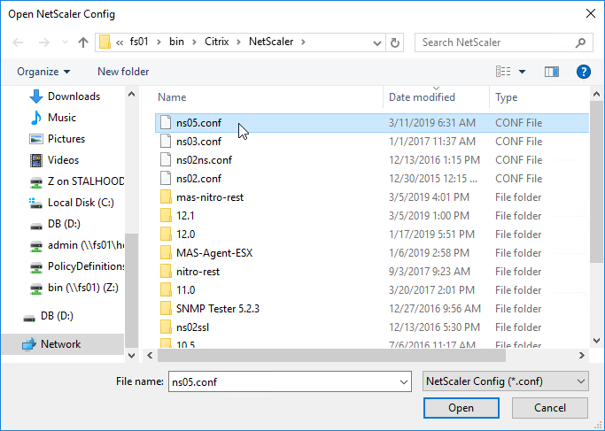
- The script will prompt you to select one or more Virtual Servers.
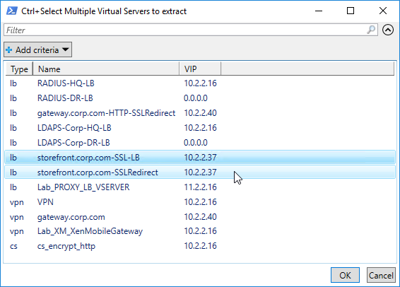
- The script then enumerates all objects linked to the chosen Virtual Servers (e.g. Responder Policies) and provides their configuration too.
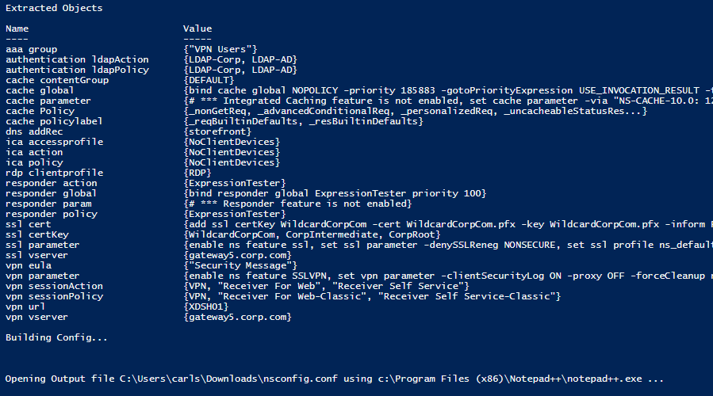
- The script also outputs global settings that might affect the operation of the chosen Virtual Servers.
- The CLI output is listed in proper order. For example, create monitors before binding them to Service Groups.
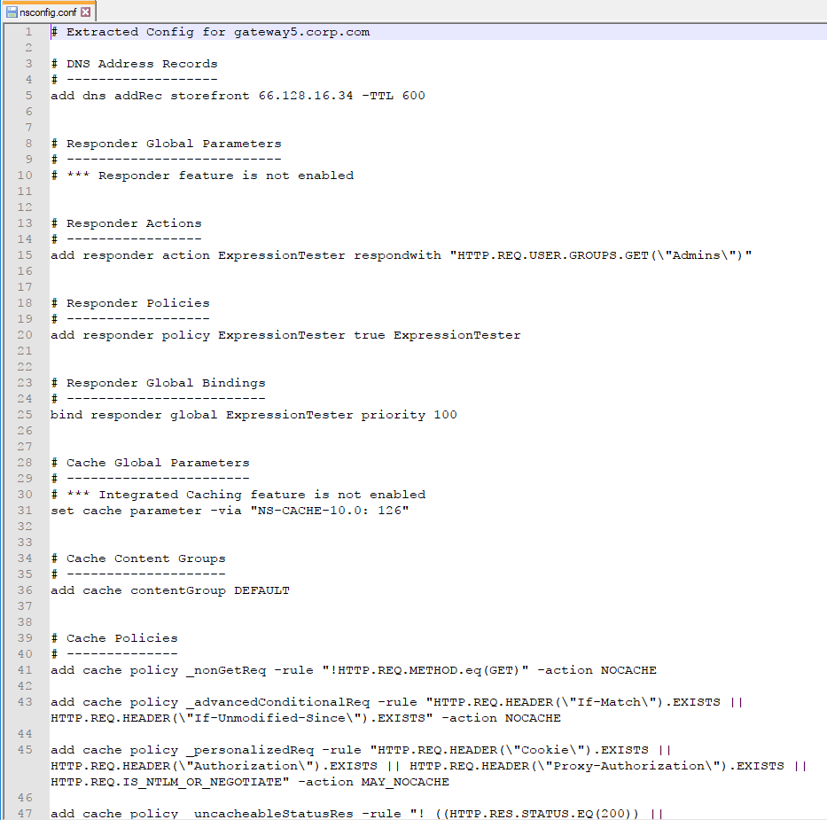
- If the config includes an "authentication vserver", then a nFactor Visualizer will be shown.
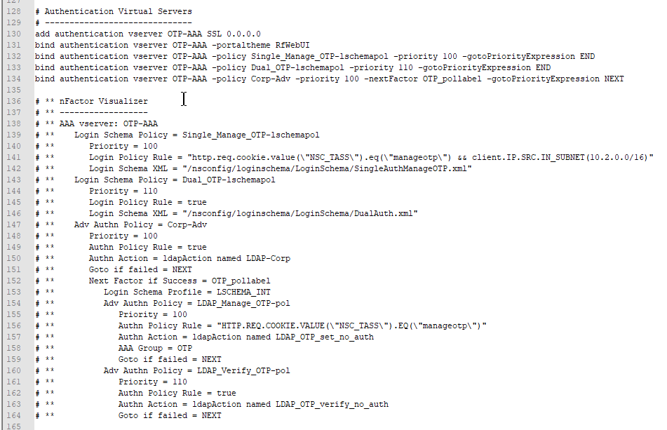
- The extracted Virtual Server CLI configuration can be used for documentation
- Or you can apply the outputted configuration to a different NetScaler ADC appliance:
- To import this output to a different NetScaler ADC, first change the IP addresses of the outputted Virtual Servers so there won't be any IP Conflict after you import.
- SSH (Putty) to the other NetScaler ADC.
- Then simply copy the outputted lines and paste them into the SSH prompt.
- Alternatively, for longer output file, you can upload the output file to the other NetScaler ADC (e.g. upload to /tmp directory), and then run batch -fileName on the new NetScaler ADC while specifying the uploaded filename (e.g. /tmp/nsconfig.conf).
- Note: the batch command requires that the input file name be in lower case only and without any spaces in the file name.
I originally attempted a dynamic extraction using complicated regular expressions, but there wasn't enough control over the extraction and output process. The new PowerShell script explicitly enumerates specific objects, thus providing complete control over the output. For example, before binding a cipher group to a Virtual Server, the current ciphers must first be removed.
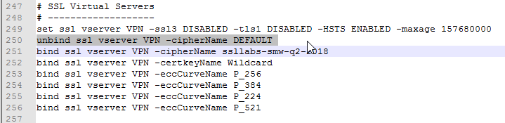
The script uses several techniques to avoid false positive matches, primarily substring matches.
Let me know what bugs you encounter.
Configure NetScaler ADC from PowerShell
You can use any scripting language that supports REST calls. This section is based on PowerShell 3 and its Invoke-RestMethod cmdlet.
Brandon Olin published a PowerShell module for NetScaler at Github. :idea:
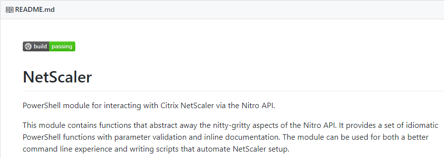
CTP Esther Barthel maintains a PowerShell module for NetScaler at https://github.com/cognitionIT/PS-NITRO. See Citrix Synergy TV - SYN325 - Automating NetScaler: talking NITRO with PowerShell for an overview.
The below NetScalerPowerShell.zip contains PowerShell functions that use REST calls to configure a NetScaler appliance. It only takes a few seconds to wipe a NetScaler and configure it with almost everything detailed on this site. A glaring omission is file operations including licenses, certificate files, and customized monitor scripts and the PowerShell script assumes these files are already present on the appliance.
[sdm_download id="1909" fancy="0"]
Most of the functions should work on 10.5 and 11.0 with a few obvious exceptions like RDP Proxy. Here are some other differences between 10.5 and 11.0:
- PUT operations in NetScaler 11 do not need an entity name in the URL; however 10.5 does require entity names in every PUT URL.
- https URL for REST calls works without issue in NetScaler 11, but NetScaler 10.5 had inconsistent errors. http works without issue in NetScaler 10.5.
Nitro REST API Documentation
NetScaler Nitro REST API documentation can be found on any NetScaler by clicking the Downloads tab. The documentation is updated whenever you upgrade your firmware.
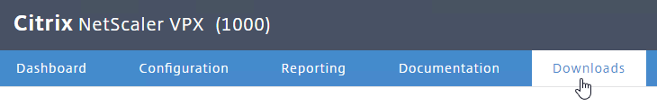
Look for the Nitro API Documentation.
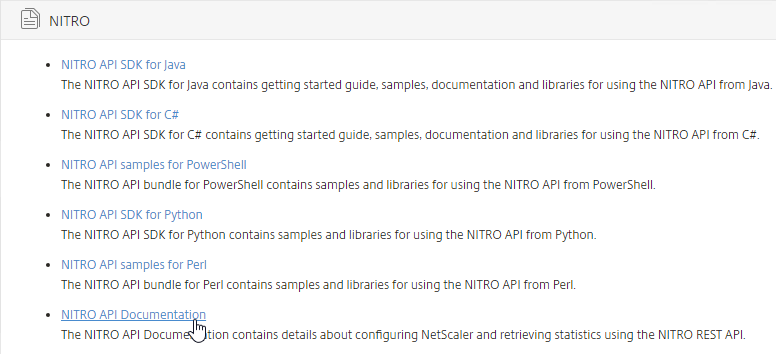
Extract the files, and then launch index.html.
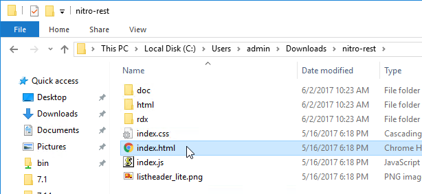
Start by reading the Getting Started Guide, and then expand the Configuration node to see detailed documentation for every REST call.
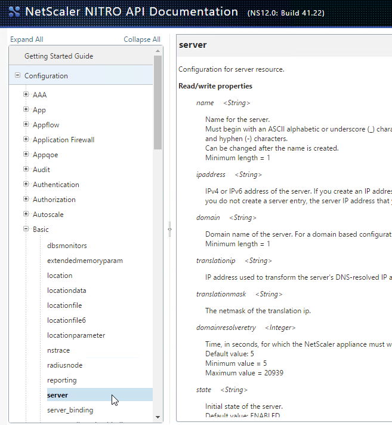
The Nitro API is also documented at REST Web Services at Citrix Docs.
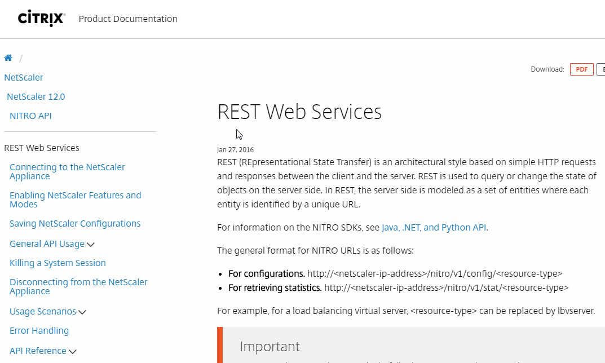